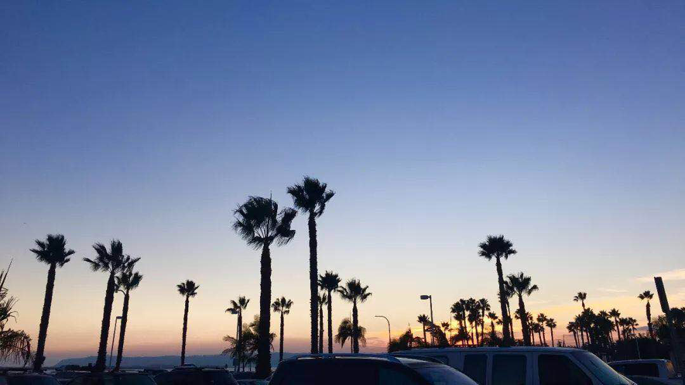
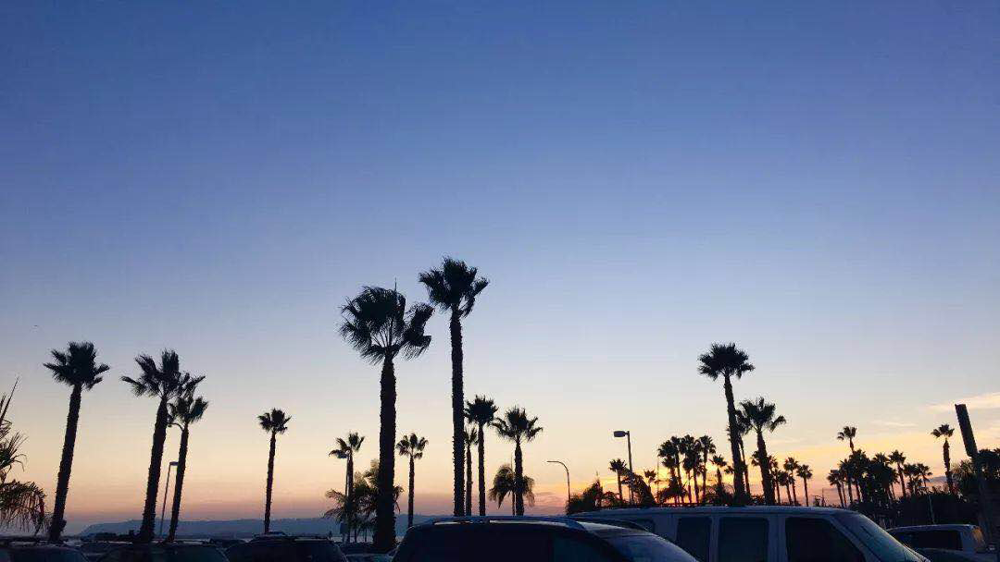

谈着分隔在加州一南一北的异地恋，除了之前写过好几次的北加州旧金山湾区、 优胜美地的风土人情之外怎么能不聊聊地处美墨边境、总被称为加州最美城市的圣地亚哥（San Diego）呢。 其实圣地亚哥除了是一个城市的名字外，也是整个郡（County）的名字， 包含了很多不同的地方比如圣地亚哥市区（Downtown）以及UC San Diego所在的（富人城市）拉霍亚（La Jolla）
 

1. Harbor Island | 海港岛
Harbor Island 是一个人造的岛屿，故名思义就是拿来停靠各种土豪们的游轮的。这个岛坐落在San Diego机场的旁边所以推荐第一个去， 而且离市区还有主要的景点都不远所以可以住在上面。岛上的风景自然是非常美丽的的但是我们还是强力推荐一下岛上的酒店！ 因为当你坐在房间的阳台上欣赏海边的日出日落时的感觉还是非常不一样的。 关于酒店我们体验过两家，分别是Sheraton San Diego Hotel & Marina和Hilton San Diego Airport/Harbor Island。 个人喜欢Sheraton一点因为他们会在房费里包含一个免费的娱乐项目， 你可以选择租自行车在岛上骑行也可以选择租各种各样的船出海（当然是出海啦）。我们选择的是peddle boat就是用脚踩的船，当然还有hayak之类的用桨划的感觉也很不错，要是带着你的另一半的话千万不要错过哟。
2. SeaWorld San Diego | 圣地亚哥海洋公园
是名副其实的海洋公园了，园区大部分都是以观赏动物和表演为主。 这里的网红是三只胖胖的虎鲸 (killer whale) ，一天只会有三次他们的表演所以去的话一定不要错过哟； 另外还有最近很火的网红动物火烈鸟可以拍拍拍（就是臭臭的呃）。 这里有一个特别项目就是跟这三只鲸鱼一起吃brunch，但是如果要去的话要在官网上提前预约哟。 还有就是关于这里的表演前排座位都会写上”wet zone”的字样， 先告诉你们坐在wet zone里是有大概率会湿身的所以带相机的朋友（比如我）就乖乖往后坐哈。至于为什么会湿身嘛，你们去了就知道了;)
3. USS Midway | 中途岛号航母
为了纪念中途岛战役而命名的航母，现在已经退役被改成了博物馆。跟很多航母博物馆一样， 船上展出了很多舰载机，但是比较特别的是这里甲板上会有人详细讲解航母是如何运作的（不过只有英文的讲解嗯）。 然后非常推荐排队去舰岛参观（就是甲板上的高塔，可以俯视整个甲板），会有人专门讲解如何指挥飞机起飞降落，如何导航，以及驾驶舱的运作，非常的详细。
4. UCSD | 加州大学圣地亚哥分校
我们学校嘛，可是没有任何一丝的古典气息，不管你去到哪都是现代建筑。 推荐打卡地点是我们又大又漂亮的图书馆(Geisel Library)，Price Center前的Triton的雕像（超级小），Muir学院前大草坪上的Sun God，Jacobs工程学院楼顶半悬空的小屋，还有Scripps海洋学院门口的海滩。来的话可以找带你们玩，只要我不在lab里赶due就行
5. La Jolla Cove | 拉荷亚湾
其实我觉得应该叫海狮湾，因为这里每天都会有成千上万吃饱喝足的海狮在这里晒太阳睡大觉。 你可以慢慢地走近拍照合影（不能摸，牌子上写着如果你摸它们就会被咬的很惨）你也可以下海跟它们一起游泳。 不过这里海狮实在是太多了所以你会听到此起彼伏的叫声还会闻到非常浓郁的海的味道，不喜欢的朋友们可以带上一只口罩。 建议黄昏的时候去，景色还是很不错的。
6. MCAS Miramar | 米拉马尔海军陆战队航空港
名字一长串但其实意思就是军用机场，在我们学校东北方向不远处，所以我们在学校早就司空见惯了各种飞机从我们头上飞过了。 这个机场平时是不对外开放的，但是这里每年秋季会举办一次航展 （其他时间可能也有，感兴趣的朋友们可以多了解一下）飞机种类可以说是非常的齐全了，而且都是现役的，每架飞机都可以进去参观哦。 虽然是免费的，但是这里管的比较严，去的朋友们务必带上身份证件（美国身份证扫一下就好了，我们拿护照的还会被拿去查档案）而且这里不允许带任何形式的包进去，而且不提供寄存。
7. Little Italy | 小意大利
在Vlog开头出现的地方，有点像唐人街一样的存在（就是以意大利文化、美食还有艺术展为主的一个街区）。 地处SD市区，是个非常适合周末去闲逛再吃个早午餐的地方，整个步行街区十分整洁优美，色彩鲜艳，不仅吃的（尤其是意大利餐）很多， 每周还都会有Little Italy Mercato Farmers’ Market。而且离海边还有上面提到的中途号航母都比较近，所以可以当作一天的开始去遛遛啦。
以上提到的这7个地方可能已经够玩两三天的了，还有很多地方比如Torrey Pines（多利松度假村，适合纯放松式度假，有很大一片高尔夫球场） 还有著名的Balboa Park之类的我们就不一一介绍啦。 纯照片版游记可以回顾一下这篇 圣地亚哥San Diego｜旅行版
-End-